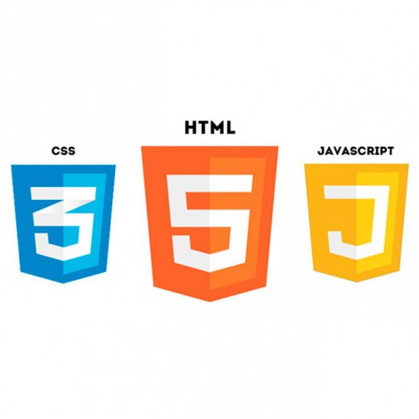

Vitor Fernandes - Developer Student
O curso de FrontEnd da Fullture - Dev Full Stack possui 3 módulos e no final do primeiro fiz essa
página simples em HTML, CSS, Javascript, Jquery e Bootstrap. Os módulos serão:
- FrontEnd 1 - HTML, CSS e Javascript
- FrontEnd 2 - React
- FrontEnd 3 - Angular
Meu LinkedIn
Meu GitHub

FrontEnd 1
Introdução ao desenvolvimento de aplicações web Front End, introdução HTML e suas principais
características, criação de estruturas e páginas com HTML, análise de código de páginas conhecidas, apresentação
do CSS, suas propriedades, comandos desenvolvimento de páginas utilizando HTML e CSS.
- Unidade 1 - Introdução ao desenvolvimento de aplicações Web Front End
- Unidade 2 - Introdução a HTML e análise de códigos HTML
- Unidade 3 - CSS e desenvolvimento de páginas utilizando HTML e CSS
- Unidade 4 - Javascript

FrontEnd 2
Desenvolvimento de aplicações Web Front End. Apresentar o framework React baseado em Javascript,
apresentação dos componentes, conceito de Single-Page Application, formulários, introdução aos padrões
arquiteturais Flux e Redux e integração com Backend utilizando Rest
- Unidade 1 - Aplicações Web Front End
- Unidade 2 - React baseado em Javascript
- Unidade 3 - Single-Page Application
- Unidade 4 - Flux, Redux e integração com Backend

FrontEnd 3
Aplicações Web Front End. Apresentar o framework Angular baseado em Javascript, apresentação dos
componentes, conceito de Single-Page Application, formulários, camadas de aplicação, fluxo de dados e integração
com Backend
- Unidade 1 - Desenvolvendo aplicações Web Front End
- Unidade 2 - Angular baseado em Javascript
- Unidade 3 - Single-Page Application
- Unidade 4 - Fluxos de dados e integração com Backend